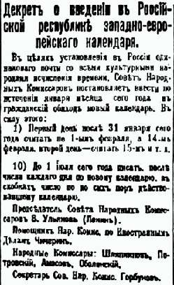

Борис Акунин
Мой календарь
Сегодня, 1 февраля, начинается тринадцатидневный период, к которому очень рекомендую отнестись по-особому.
В 1918 году, когда Россия перешла с юлианского календаря на григорианский, вышел декрет, согласно которому в стране дни с первого по тринадцатое февраля отменялись. Население извещалось, что этих чисел просто не будет, и всё. После 31 января сразу наступало 14 февраля.
В детстве эти пропавшие тринадцать дней не давали мне покоя. В них таилось Несбывшееся. В те годы все читали Александра Грина и знали цитату: «Рано или поздно, под старость или в расцвете лет, Несбывшееся зовет нас, и мы оглядываемся, стараясь понять, откуда прилетел зов. Тогда, очнувшись среди своего мира, тягостно спохватываясь и дорожа каждым днем, всматриваемся мы в жизнь, всем существом стараясь разглядеть, не начинает ли сбываться Несбывшееся?».
В первые тринадцать дней февраля у вас есть шанс сделать так, чтобы Несбывшееся сбылось. Открывается портал, где могут происходить чудеса.
Не упустите шанс.